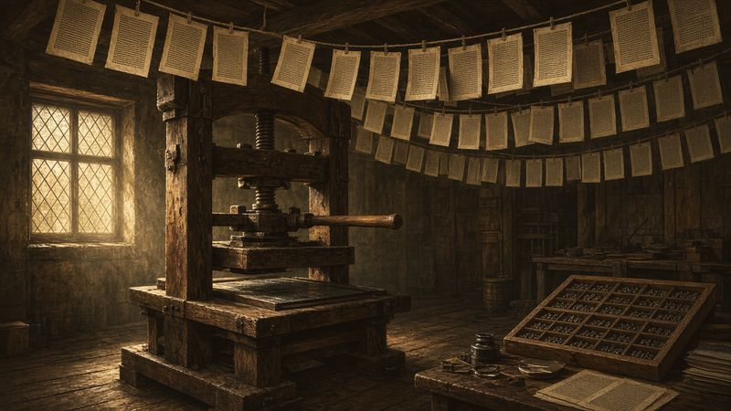
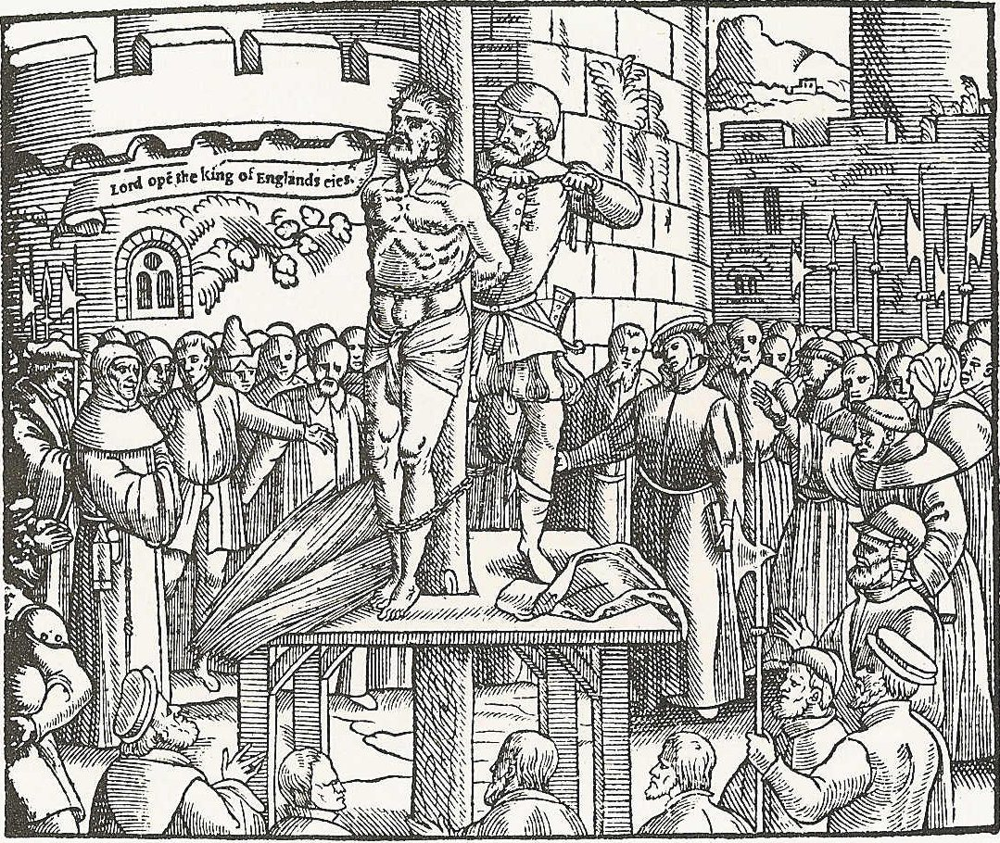
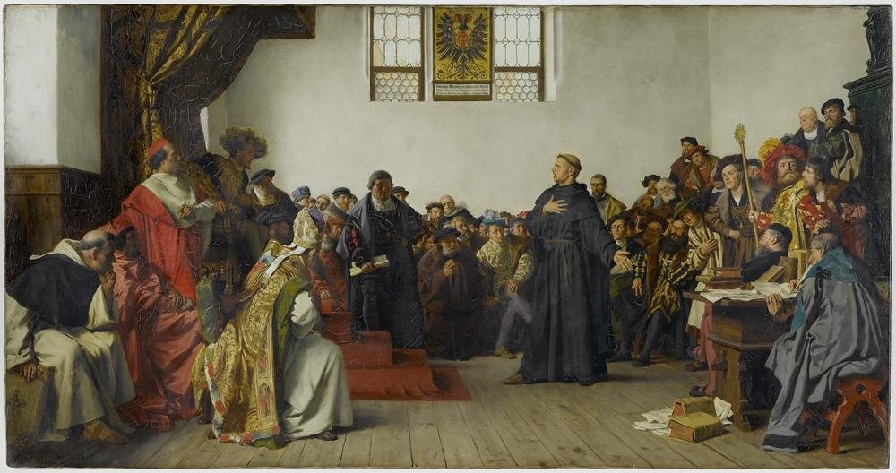
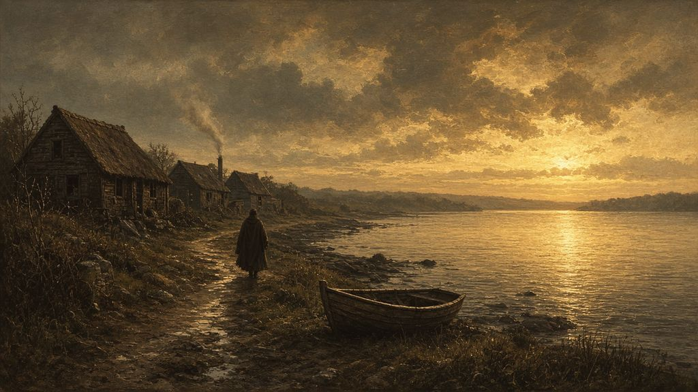
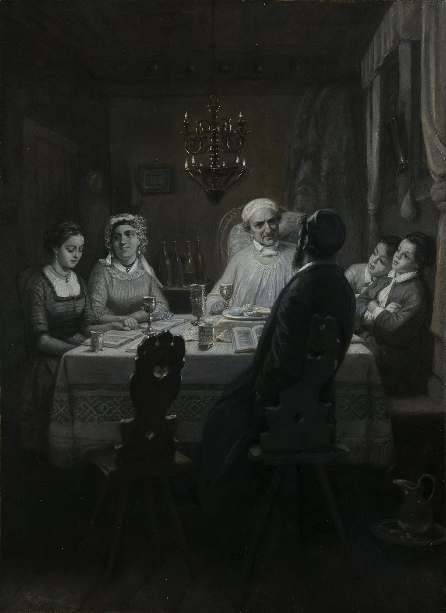
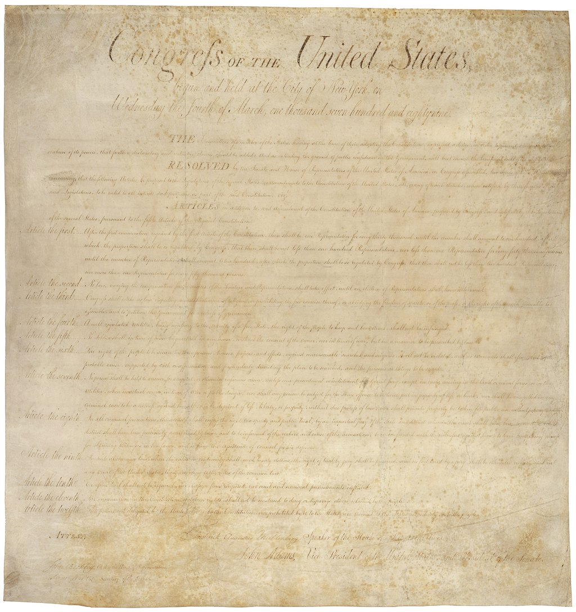

Behold, I will send you Elijah the prophet before the coming of the great and dreadful day of the LORD.
Malachi 4:5
A Plowboy’s Bible
The boy had a question, and no one he knew could answer it.
In the late winter or early spring of 1820, in a log house in western New York, a fourteen-year-old farm boy sat with a Bible open to the Epistle of James. Firelight moved on the page.† Every preacher in the neighborhood read that same book, and each one told him something different. One verse stopped him.
“If any of you lack wisdom,” it said, “let him ask of God, that giveth to all men liberally, and upbraideth not; and it shall be given him.” Years later he wrote, “Never did any passage of scripture come with more power to the heart of man than this did at this time to mine.”1
His name was Joseph Smith. Before that spring was out, he would walk into the woods to ask God which church was right. What he said he saw there would set the course of his life, and in the end it would cost him that life. But first, look at the book in his hands. It was an English Bible, the King James Version, printed in words a farm boy could read without a priest or a professor beside him. Three hundred years earlier, no such Bible existed. Some of the men who made it possible died at the stake.
How that Bible came into his hands, and why the boy reading it still felt that something was missing, is a story of people who listened at a closed door for heaven to speak. Latter-day Saints believe a Hand was over them all the while.
It begins in a cold cell, with a man who asked for a candle so that he would not have to sit in the dark.
The Prisoner at Vilvoorde
In the winter of 1535, in a castle prison a few miles north of Brussels, a slight English scholar took up his pen and wrote a letter in Latin to the governor who held him. His fingers would have been stiff with cold.†

He did not ask to be released. His case seemed to be going against him, and he knew it. He asked for small things. “A warmer cap,” he wrote, “for I suffer extremely from cold in the head.” He asked for “a warmer coat also, for that which I have is very thin,” and for “a piece of cloth to patch my leggings.” His shirts were worn out. He asked for “a candle in the evening, for it is wearisome to sit alone in the dark.”
Then he came to the request that mattered most. “But above all,” he wrote, “I entreat and beseech your clemency to be urgent with the Procurer that he may kindly permit me to have my Hebrew Bible, Hebrew Grammar, and Hebrew Dictionary, that I may spend my time with that study.”2
The prisoner was William Tyndale. For more than a decade he had lived as a fugitive on the European continent, bent over one task: putting the Bible into the English that farmers and weavers actually spoke. His New Testament, first printed complete in 1526, had been smuggled into England hidden among merchants’ goods. There it was bought, read aloud, confiscated and burned.3 Even now, cold and alone, he wanted the Hebrew scriptures of Moses and the prophets so that he could keep translating.
We do not know whether the governor sent the cap or the candle. We can picture the cell that winter: stone that never warmed, a narrow window, and long northern nights falling early over the Flemish countryside.† We do know how the story ended. In early October 1536, Tyndale was led out to the place of execution at Vilvoorde, tied to the stake, strangled and burned. The martyrologist John Foxe, writing some decades later, recorded that Tyndale cried out “with a fervent zeal, and a loud voice, ‘Lord! open the king of England’s eyes.’”4

Why would a man give his life to put the Bible into the hands of a plowboy? To answer that, we have to go back much further, to a promise made to a man named Abraham, and to a famine that a herdsman prophet warned would come.
The Covenant and the Prophets
Go back further than Tyndale’s cell, four thousand years, to a man from Ur at the edge of everything he knew. Behind him lay his father’s country, its fields and its gods. Ahead lay dust, distance and a promise.† He went at God’s word.
“I will make of thee a great nation,” the Lord promised Abraham, “and I will bless thee, and make thy name great; and thou shalt be a blessing… and in thee shall all families of the earth be blessed.” Later God renewed the promise as “an everlasting covenant, to be a God unto thee, and to thy seed after thee.”5 In the Book of Abraham, a book of Latter-day Saint scripture, the Lord adds a line this book will keep coming back to: “My name is Jehovah, and I know the end from the beginning; therefore my hand shall be over thee.”6
Jews, Christians and Latter-day Saints all read the promises to Abraham as their own family history. For the Jewish people they are the charter of a covenant that has been kept for nearly four thousand years, through exile, return and dispersion. That covenant was never revoked, and this book will treat it that way. Latter-day Saints hold the covenant dear too. They believe its blessings were meant to reach “all families of the earth,” and that the God of Abraham never stops speaking to His children.
That last belief is the hinge of everything that follows. The God of the Hebrew Bible is a God who speaks. He spoke to Moses from a bush that burned and was not consumed. He called Samuel as a boy in the night. He sent prophets to kings and to shepherds. One of them, Amos, insisted he was nobody special: “I was no prophet, neither was I a prophet’s son; but I was an herdman, and a gatherer of sycomore fruit.”7
It was this herdsman from Tekoa who gave one of the most haunting warnings in scripture:
Behold, the days come, saith the Lord GOD, that I will send a famine in the land, not a famine of bread, nor a thirst for water, but of hearing the words of the LORD: And they shall wander from sea to sea, and from the north even to the east, they shall run to and fro to seek the word of the LORD, and shall not find it.8
A famine of hearing. People would still have the old words. What they would lack was the living voice, the sense that heaven was open and someone had been sent.
“He Gave Them Power”
Christians believe that the living voice spoke again in Galilee. Jesus of Nazareth, a Jewish teacher who read from Isaiah in the synagogue at Nazareth, gathered disciples around Him. Among them were fishermen and a tax collector. From these followers He chose twelve.
The Gospels are careful to say that He did more than teach the Twelve. “When he had called unto him his twelve disciples,” Matthew wrote, “he gave them power.”9 “Ye have not chosen me,” Jesus told them, “but I have chosen you, and ordained you.”10 A later New Testament writer, drawing on Israel’s own priesthood, put the principle plainly: “No man taketh this honour unto himself, but he that is called of God, as was Aaron.”11
The early church guarded that idea. When a man named Simon saw that the Holy Ghost was given “through laying on of the apostles’ hands,” he offered them money: “Give me also this power.” Peter’s answer was blunt: “Thy money perish with thee, because thou hast thought that the gift of God may be purchased with money.”12 Authority could not be bought, borrowed or claimed. It had to be given by God.
But Paul also saw trouble coming. Saying farewell to church leaders at Miletus, he warned them: “I know this, that after my departing shall grievous wolves enter in among you, not sparing the flock. Also of your own selves shall men arise, speaking perverse things, to draw away disciples after them.”13
The Long Night
Different traditions tell what happened next in different ways. Here it is told as Latter-day Saints understand it, as fairly as possible.
The apostles were persecuted, and one by one they died, most of them violently. Latter-day Saints believe that as the apostles passed from the earth, the authority they held passed with them. In the words of the Church’s own teaching, “after the deaths of the Savior and His Apostles, men corrupted the principles of the gospel and made unauthorized changes in Church organization and priesthood ordinances.” As a result, the Lord “withdrew the authority of the priesthood from the earth.”14
It is a serious claim, and it does not mean the centuries that followed were empty of God. The Latter-day Saint apostle Robert D. Hales put it this way: “In the centuries that followed, God’s children had the Light of Christ, could pray, and could feel the influence of the Holy Ghost. But the fulness of the gospel had been lost.”15 Through those centuries countless believers lived and died in sincere devotion. They fed the poor and nursed the sick. Monks copied the scriptures by hand, letter by patient letter, and carried the Bible across a thousand years. Without them there would have been no Bible for Tyndale to translate.
In the long night, a few people began to light candles. Small flames, easily put out, or so their enemies thought.
Candles in the Dark
On October 16, 1555, two English bishops, Hugh Latimer and Nicholas Ridley, were chained to a single stake in Oxford. Foxe’s 1583 edition records that as the fire was lit, the elderly Latimer turned to his companion: “Be of good comfort, master Ridley, and play the man. We shall this day light such a candle, by God’s grace, in England, as I trust shall never be put out.”16
Their candle had been lit long before. In England in the late 1300s, an Oxford scholar and priest named John Wycliffe argued that ordinary people should have the scriptures in their own language. He and his followers produced the first complete Bible in English, translated by hand from the Latin. Church authorities condemned his teachings. Decades after his death, his bones were dug up and burned and the ashes thrown into a river. “But God’s work could not be stopped,” Elder Hales said of it.17
On April 18, 1521, a German monk and professor stood before the Holy Roman Emperor, Charles V, at the Diet of Worms. Martin Luther had challenged the sale of indulgences and other practices of the church of his day. Now he was ordered to take back what he had written. His answer, as recorded by his supporters, has echoed ever since:
Unless I am convinced by the testimony of the Scriptures or by clear reason (for I do not trust either in the pope or in councils alone, since it is well known that they have often erred and contradicted themselves), I am bound by the Scriptures I have quoted and my conscience is captive to the Word of God. I cannot and I will not retract anything, since it is neither safe nor right to go against conscience. May God help me. Amen.18
Tyndale belonged to the same generation. According to Foxe, during a heated argument with a learned churchman who declared that “we were better to be without God’s laws than the pope’s,” the young scholar replied: “I defy the pope, and all his laws,” adding that “if God spared him life, ere many years he would cause a boy that driveth the plough to know more of the Scripture than he did.”19 Foxe is the only source for that exchange, and he wrote it down about forty years later. Whatever the exact words, the ambition was real, and Tyndale kept it. Much of his phrasing survived into the King James Version of 1611. That was the Bible the farm boy in New York would one day open to James.20
Latter-day Saints honor these men. They see the Lord’s hand in their courage, in the printing press, and in a Bible that ordinary people could read. Yet they also notice something the reformers themselves said. Luther and the others did not claim that an angel had visited them, or that apostolic authority had been handed back to them. They sought to reform the church from the scriptures they had. As Elder Hales put it, the work that would follow was different: “not to reform nor… to protest what was already on the earth. It was to restore what had been on earth and had been lost.”21

Restoring would take more than a Bible. It would take heaven itself.
A Seeker in Providence
The Reformation splintered into many churches, and many of their members crossed the Atlantic. One of them was a young Puritan minister named Roger Williams, who arrived in Massachusetts in 1631.

Williams had a conscience that would not sit still. He insisted that civil magistrates had no right to punish people for matters of faith, and that the colonists ought to pay the Native peoples for their land. In 1635 the Massachusetts authorities banished him. He made his way south through the woods, away from the meetinghouses and the magistrates.† In 1636 he founded a settlement and named it Providence. It became a haven for people of every faith and of none, including Baptists, Quakers and Jews. One of the oldest synagogues in America still stands in the colony he founded.22
In Providence, Williams helped found what became the first Baptist church in America. But within months he withdrew from it. He had become what his contemporaries called a “Seeker,” one of a scattered group of Christians on both sides of the Atlantic who believed they were waiting for something no existing church had.
Latter-day Saint writers have often quoted Williams as saying, in the first person, that there was “no regularly constituted church on earth… nor can there be until new apostles are sent.” Honesty requires a correction. Those exact words are not Williams’s own. They come from an 1843 history of Providence by William Staples, who was summarizing a 1673 letter by one of Williams’s former Baptist neighbors. Here is what Staples wrote:
According to Mr. Williams’ new views as a Seeker, there was no regularly constituted church on earth, nor any person authorized to administer any church ordinance, nor could there be, until new apostles should be sent by the Great Head of the church, for whose coming he was seeking.23
Even secondhand, the picture is striking: a devout Christian minister in New England, two centuries before Joseph Smith, waiting for apostles.
He was not the only one waiting.
A Cup Poured for Elijah
Far from the meetinghouses of New England, another people were waiting too, and had been for far longer.

Every spring, at Passover, Jewish families gather around the Seder table to retell the story of the Exodus: how God brought Israel out of Egypt “with a mighty hand.” Picture such a table in some spring of the early 1800s, in Amsterdam or London or a small new congregation in New York. There are candles and unleavened bread, children asking the four questions, and the old words sung in Hebrew.† Near the end of the meal, by long tradition, a cup of wine is filled and left untouched. It is the cup of Elijah the prophet. Someone rises and opens the door of the home, so that the family can go out to greet him if he has come.24
Why Elijah? Because of the last words of the prophet Malachi. In most Christian Bibles, they are the final words of the Old Testament:
Behold, I will send you Elijah the prophet before the coming of the great and dreadful day of the LORD: And he shall turn the heart of the fathers to the children, and the heart of the children to their fathers, lest I come and smite the earth with a curse.25
In the Hebrew Bible these verses are numbered Malachi 3:23–24. They are read aloud in synagogues on Shabbat HaGadol, “the Great Sabbath,” the Sabbath just before Passover. So that the reading will not end on a word of curse, the reader goes back and repeats the promise: Behold, I will send you Elijah the prophet.26 For generations, Jewish tradition has seen Elijah as the herald of redemption. He will return before the great day of the Lord, settle questions the sages could not resolve, and turn the hearts of parents and children toward each other.
Hold that open door and that waiting cup in mind. They will come back in this story, once at a farmhouse bedside in 1823 and once in a newly finished temple in Ohio during Passover week of 1836. The covenant people of Abraham were waiting for Elijah. Seekers like Roger Williams were waiting for apostles. Across the centuries, Jews and Christians alike were listening at the same door.
A Land of Liberty
By the end of the 1700s, something new had appeared in the world: a nation whose founding law promised that its government would “make no law respecting an establishment of religion, or prohibiting the free exercise thereof.” The First Amendment to the United States Constitution was ratified in 1791. The states took longer, and Massachusetts kept a tax-supported church until 1833, but the direction was set.27

The effect on American faith was explosive. With no single church backed by the government, preachers of every stripe competed for souls. Methodists and Baptists, once small, swelled into the largest denominations in the country. Revival meetings drew thousands. One historian has called it “the democratization of American Christianity.”28 Latter-day Saints see the Lord’s hand here too. A boy who wanted to ask God which church was right needed a country where he was free to ask.
But freedom could also be bewildering. If every preacher read the same Bible and reached a different answer, how could an honest seeker know which was right?
In the hill country of Vermont lived a farmer who had thought hard about that question. Asael Smith had been born in Topsfield, Massachusetts, in 1744, and had served in the Revolutionary War. He had a large family and strong opinions, and he distrusted the harsher doctrines of the churches around him. On April 10, 1799, at the age of fifty-five, he sat down to write a letter that his wife and children were to read after his death. He opened it with an unusual, tender phrase: “My Dear Selfs.”29
We can imagine him writing by the light of a tallow candle after a long day’s work, his children asleep upstairs.† The words themselves survive:
And as to religion, I would not wish to point out any particular form to you; but first I would wish you to search the Scriptures and consult sound reason and see if they (which I take to be two witnesses that stand by the God of the whole earth) are not sufficient to evince to you that religion is a necessary theme.30
Asael urged his children to ask whether religion “consists in outward formalities” or in the “hidden man of the heart,” and whether they could save themselves “by outward forms, rites and ordinances,” or needed “help from any other hand than your own.” If they found that they needed a Savior, he wrote, “Christ saith, ‘Look unto me and be ye saved all ye ends of the earth.’ Then look to Him.”31
He did not tell them which church to join. He told them to search and to look to Christ.
“There Was No Society or Denomination…”
Among the children who might one day read that letter was Asael’s son Joseph, then twenty-seven, a Vermont farmer who had married a spirited young woman named Lucy Mack three years before. Six years later, on a farm in Sharon, Vermont, rented from Lucy’s father, Lucy would give birth to a son and name him after his father.
That boy is the one we met at the start of this chapter, with a Bible open to James. He grew up in a family that took Asael’s counsel seriously. They searched the scriptures, they prayed, and they found the competing churches confusing. When he was about twenty-six, the younger Joseph Smith wrote an account of his early life, partly in his own handwriting. He remembered being troubled as a boy by what he saw in the churches of his neighbors, and wrote that “this was a grief to my Soul.” He went on:
thus from the age of twelve years to fifteen I pondered many things in my heart concerning the sittuation of the world of mankind the contentions and divi[si]ons the wicke[d]ness and abominations and the darkness which pervaded the minds of mankind… by searching the scriptures I found that mankind did not come unto the Lord but that they had apostatised from the true and liveing faith and there was no society or denomination that built upon the gospel of Jesus Christ as recorded in the new testament.32
The spelling is that of a farm boy with little schooling. The insight is the one that ran through Wycliffe and Tyndale, through Williams and Wesley, and back to Amos’s warning of a famine. The scriptures were there. A plowboy could now read them, just as Tyndale had hoped. But the scriptures themselves told of something more: a God who spoke, apostles who were called, and authority that could not be bought or simply assumed.
Eighteen centuries earlier, the apostle Peter had stood in the temple courts in Jerusalem. He told a crowd of his fellow Jews, the children of Abraham, that heaven had received Jesus “until the times of restitution of all things, which God hath spoken by the mouth of all his holy prophets since the world began.”33
Restitution means giving back what was lost. Tyndale had died praying for a king’s eyes to be opened. Williams had waited for apostles. Jewish families kept pouring a cup for Elijah and opening the door. And in the hill country of New England, a grandfather had told his children to search the scriptures and look to Christ.
Back in the cell at Vilvoorde, Tyndale had asked for a candle, “for it is wearisome to sit alone in the dark.” Across the centuries, many others had felt the same way. What follows is the story of a family who kept asking for light, and about a boy who did more than read about it. He went into the woods to ask God for it.
But he was not the first in his family to see a light in the dark. Nearly ten years before that spring, in a New Hampshire farmhouse, his grandfather Solomon Mack lay sleepless at midnight and saw a light “about a foot from my face as bright as fire.”34
Key: † marks a sentence or passage of imagined connective detail; the note explains what is documented. Atmospheric details marked † without a note (weather, light, sound, small gestures) are imagined and drawn from no source. Full citations and verification status are in 01-sources.md.
Notes
-
Joseph Smith—History 1:11–12, https://www.churchofjesuschrist.org/study/scriptures/pgp/js-h/1. The verse is James 1:5 (KJV). On the season, see JS-H 1:14 (“early in the spring of eighteen hundred and twenty”); the reading came before the prayer. Chapter 5 tells the full story. Elder Robert D. Hales (2005; see note 6) describes the King James Version finding its way “to a new land” to “be read by a 14-year-old plowboy named Joseph Smith.” ↩
-
William Tyndale to the governor of Vilvoorde Castle, winter 1535 (Latin), trans. J. I. Mombert, reprinted in Christian History 123 (2017), “I shall be patient,” https://christianhistoryinstitute.org/magazine/article/i-shall-be-patient. This is Tyndale’s only surviving letter in his own hand. ↩
-
On Tyndale’s New Testament (Worms, 1526), its smuggling and its burning, see David Daniell, William Tyndale: A Biography (Yale, 1994); and Elder Robert D. Hales, “Preparations for the Restoration and the Second Coming,” Ensign, Nov. 2005. ↩
-
John Foxe, Actes and Monuments (“Book of Martyrs”), Tyndale narrative, https://www.ccel.org/ccel/foxe/martyrs/files/fox112.htm. The traditional date of execution is October 6, 1536. Foxe is the only source for the last words. † The description of the cell and the northern nights is imagined. The cold, the thin coat and the darkness are documented in the letter (note 2). ↩
-
Genesis 12:2–3; 17:7 (KJV). ↩
-
Abraham 2:8 (Pearl of Great Price), quoted by Elder Robert D. Hales as the theme of “Preparations for the Restoration and the Second Coming: ‘My Hand Shall Be over Thee,’” October 2005 general conference, https://www.churchofjesuschrist.org/study/general-conference/2005/10/preparations-for-the-restoration-and-the-second-coming-my-hand-shall-be-over-thee. ↩
-
Amos 7:14 (KJV); on Tekoa see Amos 1:1. ↩
-
Amos 8:11–12 (KJV). ↩
-
Matthew 10:1 (KJV). ↩
-
John 15:16 (KJV). ↩
-
Hebrews 5:4 (KJV). ↩
-
Acts 8:18–20 (KJV). ↩
-
Acts 20:29–30 (KJV). ↩
-
Gospel Topics, “Apostasy,” Church of Jesus Christ of Latter-day Saints, https://www.churchofjesuschrist.org/study/manual/gospel-topics/apostasy. ↩
-
Robert D. Hales, “Preparations for the Restoration and the Second Coming: ‘My Hand Shall Be over Thee,’” October 2005 general conference (see note 6). ↩
-
Foxe, Acts and Monuments (London, 1583), 1794, account of Ridley and Latimer (1555). The words first appear in the 1583 edition, not in the 1563 edition. Historians note that they echo Eusebius’s account of Polycarp, and whether Latimer said them is uncertain. Hales quotes them in “Preparations for the Restoration.” ↩
-
Hales, “Preparations for the Restoration” (source of the Wycliffe summary and the line “But God’s work could not be stopped”). The Council of Constance condemned Wycliffe in 1415. His remains were exhumed and burned in 1428 and the ashes cast into the River Swift; see Anne Hudson and Anthony Kenny, “Wyclif [Wycliffe], John,” Oxford Dictionary of National Biography. Scholars credit the translation largely to Wycliffe’s associates working under his inspiration. ↩
-
“Luther at the Diet of Worms,” Luther’s Works, American Edition, vol. 32 (Philadelphia: Fortress, 1958), 112–13. This is the account “prepared by the friends of the Reformation.” ↩
-
Foxe, Actes and Monuments, as above. On the anecdote’s sole source and its reliability, see “William Tyndale, John Foxe, and the ‘Boy That Driveth the Plough,’” Religious Educator 17, no. 2 (2016), Religious Studies Center, BYU, https://rsc.byu.edu/vol-17-no-2-2016/william-tyndale-john-foxe-boy-driveth-plough. ↩
-
Elder Hales cites an estimate that more than 80 percent of Tyndale’s New Testament wording was retained in the King James Version (“Preparations for the Restoration”). Estimates vary among scholars. Elder Hales calls the young Joseph Smith “a 14-year-old plowboy.” ↩
-
Hales, “Preparations for the Restoration.” ↩
-
On Williams’s banishment (1635) and the founding of Providence (1636), see Edwin S. Gaustad, Roger Williams (Oxford, 2005). The Touro Synagogue in Newport, Rhode Island, dedicated in 1763, is the oldest surviving synagogue building in the United States. ↩
-
William R. Staples, Annals of the Town of Providence (Providence, 1843), 409, summarizing a letter by Richard Scott appended to A New England Fire-Brand Quenched, which Staples dates “about 1673.” On how Staples’s summary became a first-person “quote” (via an 1847 review and William Cullen Bryant’s Picturesque America, 1872, 1:502), see “‘For whose coming I am seeking’: Quote-unquote Roger Williams,” Times and Seasons blog, June 2012, https://archive.timesandseasons.org/2012/06/for-whose-coming-i-am-seeking-quote-unquote-roger-williams/index.html. Elder Hales (2005) correctly paraphrases the statement in indirect speech. ↩
-
“Elijah the Prophet,” My Jewish Learning, https://www.myjewishlearning.com/article/elijah-the-prophet/; “What Is Elijah’s Cup?,” Chabad.org, https://www.chabad.org/holidays/passover/pesach_cdo/aid/6430337/jewish/What-Is-Elijahs-Cup.htm. † The table setting is a composite. The cup and the opened door are documented customs. No specific family is described. ↩
-
Malachi 4:5–6 (KJV). ↩
-
“Haftarah Helper: Shabbat HaGadol,” Orthodox Union, https://www.ou.org/holidays/haftarah-helper-shabbat-hagadol/. The haftarah is Malachi 3:4–24, and verse 23 is repeated at the end. ↩
-
U.S. Constitution, Amendment I (ratified Dec. 15, 1791). Massachusetts ended its established church in 1833 (Article XI of the Articles of Amendment to the Massachusetts Constitution). See Church History Topics, “Christian Churches in Joseph Smith’s Day,” https://www.churchofjesuschrist.org/study/history/topics/christian-churches-in-joseph-smiths-day. ↩
-
Nathan O. Hatch, The Democratization of American Christianity (Yale, 1989), cited in the bibliography of “Christian Churches in Joseph Smith’s Day.” That topic also notes that Methodists and Baptists eclipsed the Congregationalists “by the mid-1800s.” The sentence on the Lord’s hand states a Latter-day Saint belief; compare Hales, “Preparations for the Restoration” (“Under God’s hand they secured religious freedom for every citizen”). ↩
-
Asael Smith to “My Dear Selfs,” April 10, 1799, Asael Smith Letter and Genealogy Record, 1799, ca. 1817–1846, Church History Library, MS 8605 (catalog description: written “to be read after his death”); cited in Saints, vol. 1, ch. 1, note 19. Asael’s birth (7 March 1743/4, Topsfield) is from the JSP “Joseph Smith Pedigree Chart.” On his military service and religious views, see Richard Lloyd Anderson, Joseph Smith’s New England Heritage, rev. ed. (2003). ↩
-
Asael Smith letter, 1799, as transcribed in Anderson, Joseph Smith’s New England Heritage, and in Joseph Fielding Smith, “Asael Smith of Topsfield, with Some Account of the Smith Family,” Topsfield Historical Society Historical Collections 8 (1902), archive.org, https://archive.org/stream/AsaelSmithOfTopsfield/asael_smith_of_topsfield_djvu.txt. † The tallow candle and sleeping children are imagined. The letter’s date, its address and its content are documented. ↩
-
Asael Smith letter, 1799 (same sources). The biblical quotation is Isaiah 45:22. ↩
-
Joseph Smith, History, circa Summer 1832, 1–2, Joseph Smith Papers, https://www.josephsmithpapers.org/paper-summary/history-circa-summer-1832/2. Original spelling retained. The JSP editors’ bracketed letters are kept, and the strikeout “mand” (corrected by Joseph to “mankind”) is silently resolved. ↩
-
Acts 3:12, 21, 25 (KJV). ↩
-
Solomon Mack, A Narraitve of the Life of Solomon Mack (Windsor, VT, [1811]), about 22–23, Internet Archive, https://archive.org/details/narraitvesicofli00mack. Mack dates his illness to “the fall of the year 1810.” The scene is told in full at the start of Chapter 2. ↩